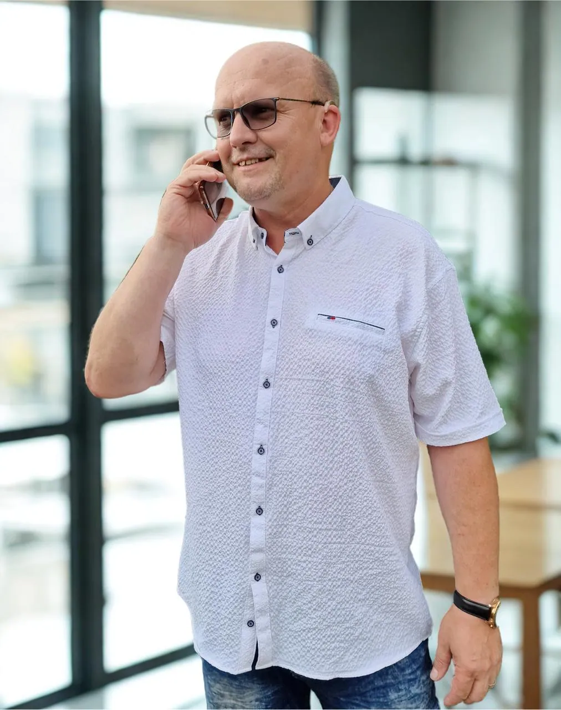
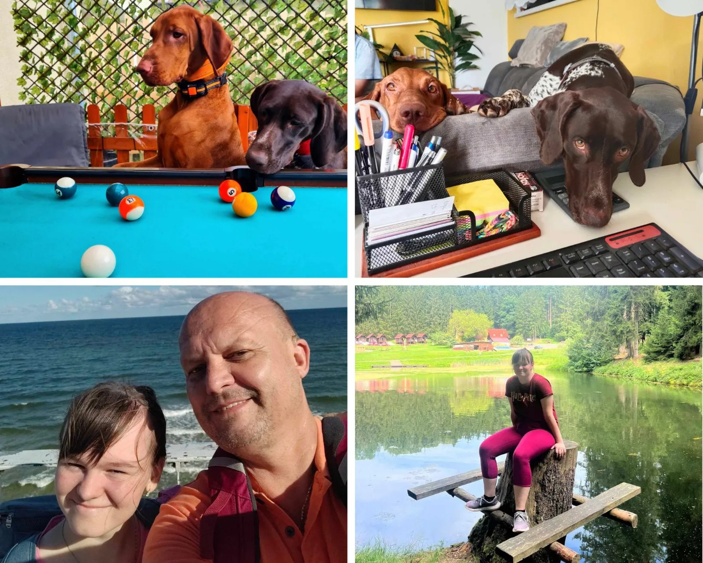

Můj příběh
Slyším díky technice. Rozumím díky srdci.
Realitní makléř, ale také veselý člověk, manžel a táta. A člověk, který ví, jaké to je, když svět zničehonic ztichne.

Proč umím naslouchat
Od ticha ke každému slovu.
Scrollujte pomalu. Tak nějak to znělo, když se mi sluch vracel.
Svou kariéru v realitách jsem začal s horším sluchem. V průběhu let se ale vyvinula těžká percepční ztráta sluchu.Neuvěřitelně mi to ztížilo práci. Pro realitního makléře je komunikace vším — musím rozumět klientům, jednat jejich jménem a vysvětlit každý důležitý detail o nemovitosti. Ztráta sluchu mi bránila poskytovat služby, na které jsem byl zvyklý.
Rozhodl jsem se pro operaci kochleárního implantátu. Změnila mi život.Kochleární implantát obchází poškozené části ucha a posílá elektrické signály přímo do sluchového nervu. Implantát mi vrátil sluch — a nejen to.
Protože vím, jaké je o sluch přijít, vnímám víc. Okolí, lidi i to, co mi klienti opravdu říkají.Díky kochleární technologii mohu znovu naplno komunikovat. Implantát vrátil mou kariéru na správnou cestu — a mně dal schopnost pozorně naslouchat přesně tomu, co moji klienti chtějí.
První obchody v realitách — už tehdy s horším sluchem.
Těžká percepční ztráta sluchu. Každý telefonát je boj.
Operace, která mi vrátila zvuk — i chuť do práce.
2. místo v soutěži Realiťák roku, okres Hradec Králové.
3. místo v soutěži Realiťák roku, okres Hradec Králové.

Kdo jsem
Realitní makléř, ale také veselý člověk, manžel a táta
Nejen prací živ je člověk. Kromě toho, že jsem realiťák, jsem hlavně člověk z masa a kostí. Volný čas se snažím co nejvíc trávit s rodinou.
S dcerou Natálkou jezdíme na kole a koloběžce a lyžujeme. Doma máme dva psy — Coru (maďarský ohař) a Kyru (německý ohař), se kterými trávíme čas na louce nebo na procházkách v lese.
V práci mi pomáhá manželka Radka Veiglová jako asistentka. Takže když voláte nám, voláte vlastně rodinné firmě.
Nuda? Tak to u nás absolutně nehledejte.

Ocenění a vzdělávání
Proč se účastním Realiťáka roku?
Věřím, že kvalitní práce si zaslouží být vidět. Soutěž mě motivuje se neustále zlepšovat a posouvat dál — a je úzce propojená se vzděláváním. Mám díky ní přístup k aktuálním trendům, novinkám v legislativě a zkušenostem od špiček v oboru.
V pravidelných rozhovorech Realiťáka roku můžete nahlédnout do mého přístupu k realitám: co mě motivuje, jak pracuji s klienty a proč mě tahle práce opravdu baví.
okres Hradec Králové
okres Hradec Králové
České republiky
Odhad ceny zdarma
Pojďme si promluvit.
Rád si vyslechnu, co plánujete. Osobně u vás, v kanceláři v Hradci Králové nebo online — jak je vám to příjemnější.